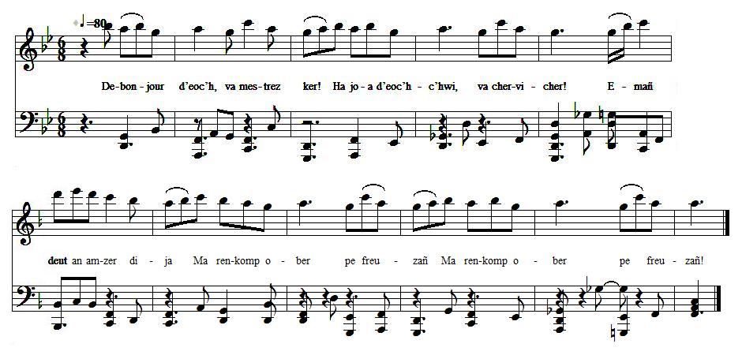

<


|
MARI - De-bonjour deoch, va mestrez ker ! - Ha joa deoch-chwi, va chervicher! - Emañ deut an amzer dija Ma renkomp ober pe freuzañ. Emañ deut dija an amzer Ma rankomp ober pe lezel. -Mar deo dimeziñ a fell deoch, Den yaouank, ne zimezin ket deoch! Me meus choazet evit bried An Hini en-neus krouet ar bed. An Hini en-neus krouet ar bed-mañ Hag a rer Doue Anezhan! A zo maro evidomp oll Da virout na ay den den da goll. Pa edon en iliz en orezon Em-boe ur revelasion: E oe gant un ael din laret Moned dar gouent, lezel ar bed, Moned dar gouent da leanez, Lezel sourzioù ar bed a-gostez. - Er gouent, ma viot leanez, Grit ma vezin abad, va mestrez, Dindan ur vantell e plederi Ur belek evit hon eurejiñ. Va mestrez, a-benn ur pennad dervezh Ho-neus-ni ambuzet asamblez Ha toud e vint amzer kollet Mar deo gwir ar pezh a larit. - Mar ho-peus, den yaouank, amzer gollet Eo just e vefech rekompanset. Me pedo Doue deiz ha noz Vit nem wellit er baradoz. - Didostait amañ, va mestrez, Mhoch ambrasin choazh vit ur wech. Roit din ur pok da kimiadañ Evit ar chimiad diwezhañ. - Dalit va zorn ma kimiadimp Evit dam bizaj ne bokot mui Ne bokot jamez dam bizaj : Echu amzer ar vignonaj. -Dalit va mestrez an diamant A roan-me deoch-hu a-bresant. Lakit-hi war ho torn dehoù Gwalenn Doue hor chonduo. - O, salhokras, sur, den yaouank, Nem-eus ket afer ho diamant. Ar walenn deus-a zorn Doue Zo etrezomp-ni noz ha dez! - Mar fell deoch gozout ha kleved Gant piv ar zon kompozet: An Aotroù Kollioù a Blou-Gerne En-doa eñ c'hompozet warlene. Transcription KLT: Chr.Souchon (c) 2009 |
MARIE - Bonjour à vous, amie si tendre! - Bonjour, monsieur mon soupirant! - Il serait désormais grand temps De décider quel parti prendre. Oui, le temps est venu, je crois, Que nous agissions ou rompions. - Si vous voulez parler d'union, Ce ne sera pas avec moi. J'ai déjà fait choix d'un époux. Il créa le ciel et la terre. Le seul époux que je révère C'est le Bon Dieu, le saviez-vous?. Ce Dieu qui souffrit sa passion Pour le pardon de nos péchés. C'est à l'église où je priais Que j'eus cette révélation: Voici qu'un ange me disait: "Il faut au couvent aller vivre. Prends donc le voile qui délivre Des soucis du monde à jamais." - Du couvent où vous serez nonne, Ma douce, faites-moi l'abbé! Oui, un prêtre en habit brodé Pour nous marier, sinon personne! Tous ces jours, amie, comptez-les, Que nous avons passés ensemble! En pure perte, à ce qu'il semble, Si vous dites la vérité! - Le temps que vous perdiez en vain Mérite récompense, ami. Je prierai Dieu qu'au paradis Il nous réunisse demain. - Venez ici chère âme, vite, Une fois encor, je le veux, Me donner un baiser d'adieu, Comme on fait lorsque l'on se quitte. - Prenez ma main, pour me quitter! Les lèvres, comme le visage, Sont là pour un tout autre usage, Passé le temps de l'amitié. - Vous reçûtes de moi, jadis, Un diamant. Qu'il quitte sa boîte Et qu'il soit, à votre main droite, L'anneau de Dieu qui nous conduit. Oh, sans vous offenser, jeune homme, Je n'ai que faire d'un diamant. Entre nous, il est maintenant Un autre anneau que Dieu me donne! - Vous désirez savoir sans doute, Qui donc composa ce morceau. Ce fut Colliou de Plougerneau, L'année passée, pour qu'on l'écoute. Trad. Christian Souchon (c) 2009 |
MARY - Good morning to you, my sweetheart - Good morning to you, my escort! - It's about time for us to know What we should leave, what we should do. It's about time to ask you If it is in vain that I woo. - Now, by this you should not tarry, Young man, I don't want to marry! The husband Whom I have chosen Has created earth and heaven. With everything he did the same. You know Him well. God is His name. He died on the Cross for us all To make good for our ancient fall. And to me, in church, as I prayed, This great revelation was made: I heard an angel say to me That in a convent I should be A nun and give up the mundane Things of the world that are but vain. - A nun in a convent? Why not? Provided I am the abbot! A priest in embroidered surplice? Aye, we need one to marry us! There were of days quite an amount We spent together, if you count. All that time was wasted away If it is the truth that you say. - For the time you wasted in vain, I'll make good. You'll need not complain. I shall pray to God, day and night, He may us in Heaven unite. - If you don't want me to complain Come, give me a kiss, once again! Come, my sweetheart, kiss me goodbye Since we'll be parted you and I. You'll kiss my hand. Neither are lips Nor face convenient for a kiss. No, you won't kiss my face, never! Time for friendship now is over. - Take, my sweetheart, the diamond That I gave you as a present. Put it on your right ring finger. Be it of good luck harbinger. - With your leave, young man, you confuse Me with that ring that's of no use. The ring of God keeps us away One from another, night and day! - Do you want to know and to hear Who has composed the song here? T'was sir Colliou of Plouguerneau. And today just a year ago. Transl. Christian Souchon (c) 2009 |